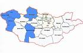

Gobierno
 De: La Frikipedia, la enciclopedia extremadamente seria.
De: La Frikipedia, la enciclopedia extremadamente seria.
El gobierno es lo que manda en un estado, en una secta, en una sarie de televisión y es como los perros nos llaman a los humanos, excepto a Joaquín Sabina, que es nada que ver ni con la palabras Gochón, ni con Gnomo, aunque se sabe que un tal David el Gnomo gocón fue gobernante del zoológico de Osaka, Japón, y más tarde Fuengirola.
En la Edad Antigua.
En este horrendo lugar se inventó la primera democracia de la historia.
 Aunque hoy en día hay un país llamado Mongolia, no es el mismo que el del pasado.
En la Edad Antigua, después de cuando los monos dominaban el mundo en ese período llamado El planeta de los simios, habían 2 tipos de gobierno.
- Monarquía: era el 99% de los países del mundo y de Rabanolandia. Aquí mandaba el rey, y ay del que se atreva a decirle algo, como los partos, que mataban a cualquiera que hiciera sombra al rey. Los asirios se llamaban ``rey de todo`` y los persas mazdeístas, aunque fueron mucho más poderosos (acabaron con el problema del precio de la vivienda), sólo se llamaban servidores de Ahura-Mazda.
- Atenas y Roma, pero Julio César y Alejandro Majono se encargaron de arreglar ese error mental, y ambos se fueron a Pekín en una catastrófica guerra contra los antepasados de Mao-Tsé-Tang.
Cabe destacar que Sócrates estaba en contra de la democracia de Atenas, como ya contaré más adelante.
Una vez Sócrates le dijo a un político de Atenas:

|
¿Cómo haces tú para cuando te pones enfermo? ¿Haces que la gente que no tiene ni idea vote qué medicina debes tomar? ¿Creas partidos políticos para decidir qué medicina debes tomar? Para curarte, necesitas a una sola persona sabía, el médico. Pues para gobernar un país, hace falta un dictador sabio, un hombre sabio que sepa de política.
|

|
|
|
Venecia, poderosa democracia de la Edad Media (no confundir con la Tierra Media).
En esta época, famosa porque empieza después de que Juan y Medio (antepasado del de hoy en día) destruyera al Imperio Romano con la ayuda de Odoacro.
- Monarquía: Representando el 98% de los países del mundo, ya no tenían tanto poder religioso. Ahora los sacerdotes, ya fueran cristianos o musulmanes o camaleones, tenían tanto poder que muy pocos reyes hacían ya lo que querían, excepto en Mongolia y en el lejano reino de Humor Amarillo, como nos contó Marco Polo.
- República (de imbéciles): Como bien dijo Sócrates, la democracia es lo más tonto inventado en occidente excepto los villancicos (que son españoles, por supuesto) es la democracia, como la del Dux de Venecia (que nunca supo valorar a Marco Polo) y Génova, aparte del reino de Menuda Noche, que se encuentra en una realidad alternativa-espacio-loco-tiempo-amiga-del-alma-de-la-muerte-. Algún día deberíamos hablar de las realidades alternativas.
Edad más o menos moderna (pero no tanto).
El descubrimiento de América y el descubrimiento del microondas con leche y la lucha libre mexicana, cambió el mundo de forma inimaginable.
- Democracia: Sí, amigos, aunque no os lo creáis, por culpa del mal ejemplo de Países como Estados Unidos, resulta que el 97% de los países del mundo era una horrenda república. Sin comentarios. Bueno, uno sí: ¿por qué está triste mi abuelo? (Es una copla flamenca.)
- Monarquía: Los únicos países tan inteligentes como para ser todavía monarquía súper absoluta y represiva eran Irán, con su súper Sha, Japón, con su imperialismo y los camikaces, China, con un emperador aficionado al Garfield, pero es que es verdad.)
Ahora mismo.
Caricatura de político estándar.
- República: ¿Será posible? Las repúblicas (gracias a los dictadores) han bajado a un ¡95%! Ya sé que es increíble.
- Monarquía: Entre los dictadores y reyes tenemos: Fidel Castro, mi ídolo del Mal bueno, o del bien Malo, a un pariente de Juan y Medio que se colocó en Sudán, a los asquerosos y petroleros reyes Repsol, en Arabia Saudí, Chimpompíng, en Corea del Norte, Papá Noel en corea de Enmedio, el Dalai Lama (rey sin reino), y los Reyes Magos en un extraño lugar no identificado llamado "Lejano Oriente". Ah, y también Cristo, rey de un lugar llamado "El reino de los cielos".
Y así es el tema del gobierno. ¡Y ahora me da un paro cardíaco!
Autor(es):
- Krusher
- Nexo
- Doctor grijander
- Alexmg666
- Grifada
- Epikurolibre
- Azulejos
- Samsongas
- Wwtawriter112
- Dreik
Frikipedia 2005-2016, Licencia
GFDL 1.2 - Extraído por FrikiLeaks